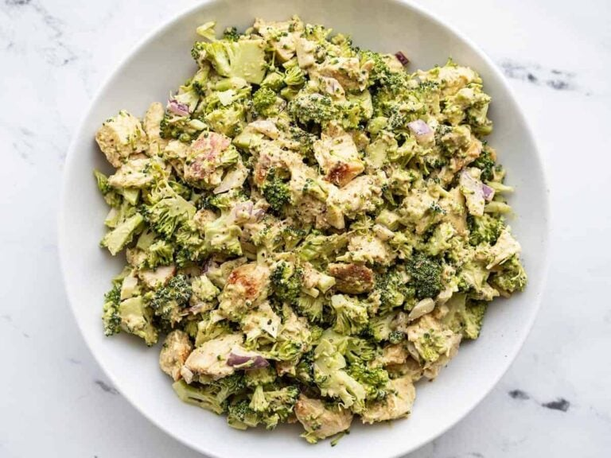

Pesto Chicken and Broccoli Salad

Recipe via Beth Moncel - © Budget Bytes
Description
Another recipe from
Budget Bytes. A different take on the chicken salad, this one includes pesto!
According to the recipe, it recommends raw broccoli to give the salad a
crunchy texture. This dish goes well stuffed in a pita, wrapped in a
tortilla, or on top of a green salad.
Ingredients
- 1 cup chopped cooked chicken
- 1 lb fresh broccoli (about 2 cups chopped)
- 1/4 cup chopped red onion
- 1/4 cup basil pesto
- 1/4 cup mayonnaise
- 1 tbsp lemon juice
- 1/4 tsp freshly cracked black pepper
Steps
-
Chop the chicken and broccoli into bite-sized pieces and finely dice the
red onion.
- In a bowl, stir together the pesto, mayonnaise, and lemon juice
-
Add the chicken, broccoli, and red onion to a large bowl. Pour the
creamy pesto over the top, and add the freshly cracked pepper. Stir to
combine
-
Adjust seasoning to taste. Serve immediately or refrigerate for later